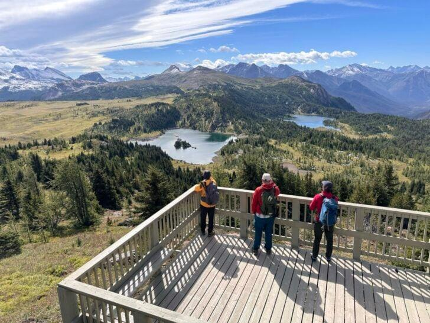

← Sunshine Meadows
🥾 Standish Viewpoint
Sunshine Meadows
⭐ Sunshine Meadows 최고의 파노라마 전망을 감상하는 대표 전망 코스

📅 우리 일정
Day 5 오후 (시간이 충분하면 추천)
🏞 기대 풍경
🏔 360° 로키 산맥 파노라마
💎 Rock Isle Lake 내려다보기
🌼 끝없이 펼쳐진 고산 초원
☁ 높은 전망대에서 보는 Sunshine Meadows
📸 Sunshine Meadows 최고의 전망 포인트
📏 기본 정보
🚶 걷는 거리
왕복 약 5.5km
⏱ 걷는 시간
약 2~2.5시간
💪 난이도
보통
📈 고도차
약 220m
🚻 편의시설
✔ Sunshine Village 주차장
✔ 곤돌라 및 Standish Chairlift 이용
✔ 화장실 (베이스 및 상부)
✔ 카페 및 레스토랑
🎒 준비물
👟 트레킹화 권장
💧 물 1L
🧥 바람막이 (정상은 바람이 강할 수 있음)
🧴 선크림, 선글라스, 모자
📷 카메라 또는 망원렌즈
💡 여행 Tip
✔ Sunshine Meadows에서 가장 뛰어난 전망을 감상할 수 있는 코스입니다.
✔ 정상에서는 Rock Isle Lake와 Sunshine Meadows를 한눈에 내려다볼 수 있습니다.
✔ 정상 부근은 바람이 강한 날이 많으므로 바람막이를 준비하세요.
✔ Rock Isle Lake 코스와 함께 걸으면 Sunshine Meadows의 핵심 풍경을 모두 감상할 수 있습니다.
✔ 오전에는 햇빛이 호수 방향으로 비쳐 사진 촬영에 가장 좋은 시간입니다.
← Sunshine Meadows